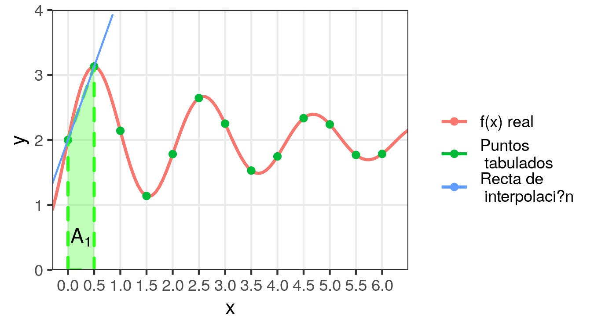
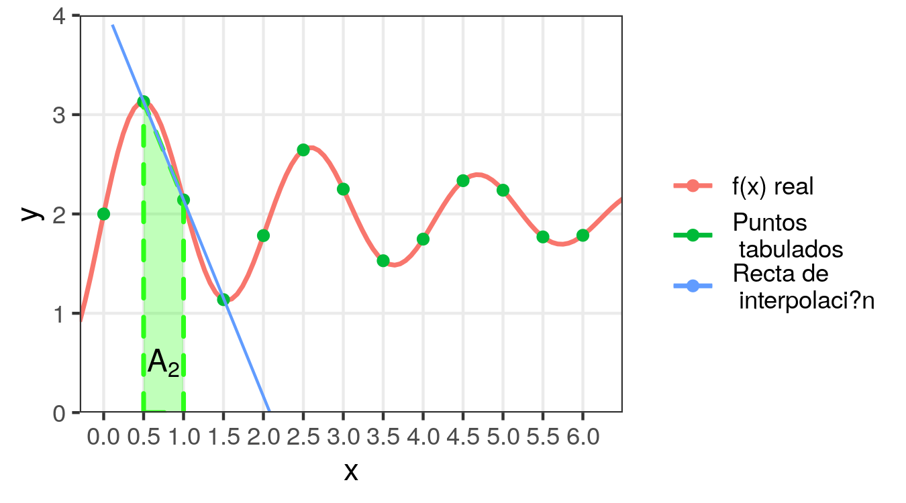
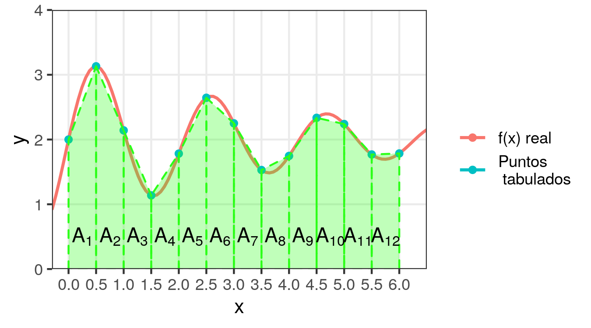
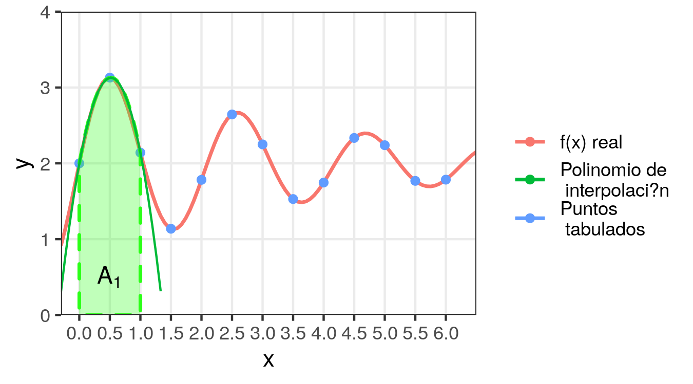
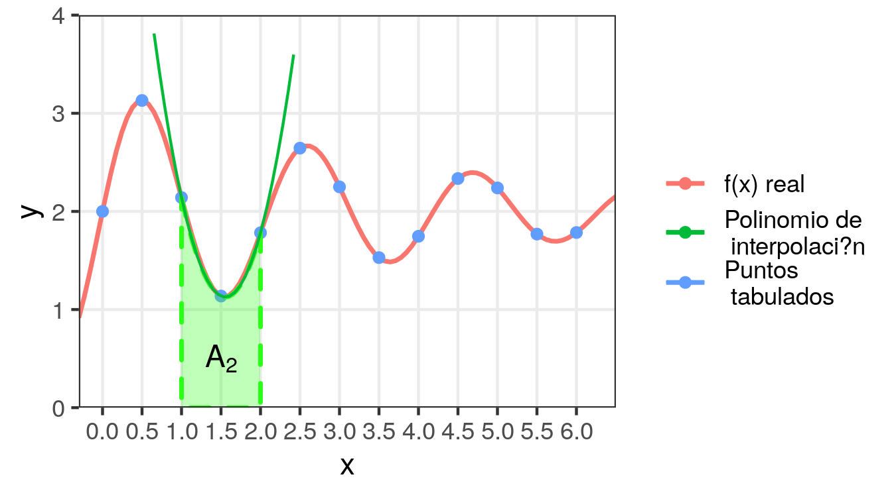
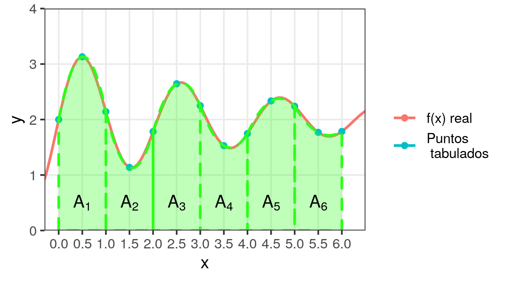
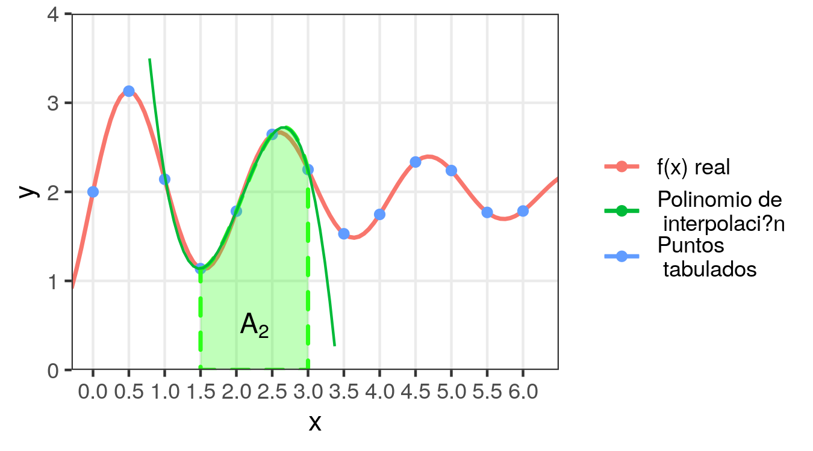
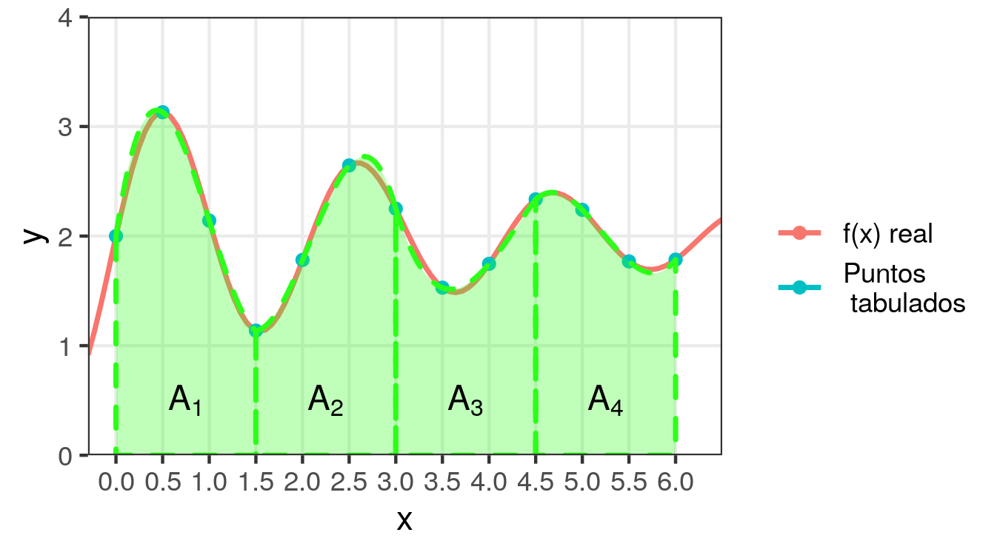

5 Aproximación Polinomial: integración y derivación numérica
5.1 Integración numérica
- Dada la función \(y = f(x)\) definida en forma tabular con a través de \(n+1\) valores de \(x\) equiespaciados \(x_0, x_1 = x_0 + h, \cdots, x_n = x_0 + nh\), se desea hallar una aproximación de la integral definida:
\[\begin{equation} \tag{5.1} \int_{x_0}^{x_n} f(x)dx \end{equation}\]
- Para esto, aproximaremos a \(f(x)\) con el polinomio de Newton:
\[\begin{equation} \tag{5.2} f(x) \cong y_0 + k \Delta y_0 + \frac{k(k-1)}{2!}\Delta^2 y_0 \\ + \frac{k(k-1)(k-2)}{3!}\Delta^3 y_0 + \cdots \end{equation}\]
\[ k = \frac{x-x_0}{h} \]
- En (5.1) la variable es \(x\), mientras que en (5.2) la variable está expresada como \(k = (x - x_0)/h\), por lo tanto para poder reemplazar (5.2) en (5.1) se debe realizar un cambio de variables:
\[ k = \frac{x-x_0}{h} \implies \begin{cases} x = x_0 + hk \\ dx = hdk \\ x = x_0 \implies k = \frac{x_0-x_0}{h} = 0 \\ x = x_n \implies k = \frac{x_n-x_0}{h} = \frac{x_0 + nh -x_0}{h} =n \\ \end{cases} \]
- Luego:
\[ \begin{aligned} & \int_{x_0}^{x_n} f(x)dx \\ & \cong \int_{0}^{n} \Big( y_0 + k \Delta y_0 + \frac{k(k-1)}{2!}\Delta^2 y_0 + \frac{k(k-1)(k-2)}{3!}\Delta^3 y_0 + \cdots \Big) h\,dk \\ & = h \int_{0}^{n} \Big[ y_0 + k \Delta y_0 + \Big( \frac{k^2}{2} - \frac{k}{2} \Big) \Delta^2 y_0 + \Big( \frac{k^3}{6} - \frac{k^2}{2} + \frac{k}{3} \Big) \Delta^3 y_0 + \cdots \Big] dk \\ &= h \Big[ \left. y_0 k + \frac{k^2}{2} \Delta y_0 + \Big( \frac{k^3}{6} - \frac{k^2}{4} \Big) \Delta^2 y_0 + \Big( \frac{k^4}{24} - \frac{k^3}{6} + \frac{k^2}{6} \Big) \Delta^3 y_0 + \cdots \Big] \right\vert_{0}^{n} \\ &= h \Big[ y_0 n + \frac{n^2}{2} \Delta y_0 + \Big( \frac{n^3}{6} - \frac{n^2}{4} \Big) \Delta^2 y_0 + \Big( \frac{n^4}{24} - \frac{n^3}{6} + \frac{n^2}{6} \Big) \Delta^3 y_0 + \cdots \Big] \end{aligned} \]
Ejemplo. Se tienen los siguientes valores tabulados de \(f(x)\) y se desea hallar su integral entre 0 y 6.
| \(x\) | \(y=f(x)\) |
|---|---|
| 0.0 | 2.00 |
| 0.5 | 3.13 |
| 1.0 | 2.14 |
| 1.5 | 1.14 |
| 2.0 | 1.78 |
| 2.5 | 2.64 |
| 3.0 | 2.25 |
| 3.5 | 1.53 |
| 4.0 | 1.75 |
| 4.5 | 2.34 |
| 5.0 | 2.24 |
| 5.5 | 1.77 |
| 6.0 | 1.78 |

La curva roja es la verdadera función \(f(x)\) que originó la tabla, la cual suponemos desconocida o difícil de integrar.
5.1.1 Fórmula trapecial
- Si la interpolación se limita al primer orden y la integral sólo se calcula entre los dos primeros valores de \(x\), se obtiene:
\[\begin{gather*} \int_{x_0}^{x_1} f(x)dx \cong \int_{0}^{1} \Big( y_0 + k \Delta y_0 \Big) hdk = h \left. \Big( y_0 k + \frac{k^2}{2} \Delta y_0 \Big) \right\vert_{0}^{1} \\ = h \Big( y_0 + \frac{\Delta y_0}{2} \Big) = h \Big( y_0 + \frac{y_1 - y_0}{2} \Big) = \frac{h}{2} (y_0 + y_1) \end{gather*}\]
- En el ejemplo:
\[ \int_{0}^{0.5} f(x)dx \cong \frac{0.5}{2} (3.13 + 2) = 1.2825 \]
- Geométricamente, esto equivale al área \(A_1\) del trapecio formado por la recta de interpolación y el eje de las abscisas, entre \(x_0\) y \(x_1\):
\[A_2=1.2825\]

- De manera semejante, se puede emplear la interpolación lineal de Newton para obtener una aproximación de la integral entre \(x_1\) y \(x_2\):
\[ \int_{x_1}^{x_2} f(x)dx \cong A_2 = \frac{h}{2} (y_1 + y_2) \]
\[A_2=1.3175\]

- Y sucesivamente para todos los intervalos:
\[ \int_{x_{i-1}}^{x_i} f(x)dx \cong A_i = \frac{h}{2} (y_{i-1} + y_i) \quad i = 1, \cdots, n \]
- De modo que la suma de las áreas de los trapecios \(A_i\) resulta ser la aproximación para la integral entre \(x_0\) y \(x_n\):
\[ \int_{x_{0}}^{x_n} f(x)dx \cong \sum_{i=1}^n A_i = \sum_{i=1}^n \frac{h}{2} (y_{i-1} + y_i) = \frac{h}{2} \Big( y_0 + y_n + 2 \sum_{i = 1}^{n-1} y_i \Big) \]
- La fórmula hallada se conoce como fórmula trapecial y se la simboliza con:
\[ A_{1/2} = \frac{h}{2} \Big( y_0 + y_n + 2 \sum_{i = 1}^{n-1} y_i \Big) \]
- Cuanto menor sea el ancho de los intervalos \(h\) y más se acerque \(f(x)\) a una recta dentro de dichos intervalos, mejor será la aproximación así obtenida.
- Gráficamente:

- En el ejemplo: \(A_{1/2} = 12.3000\).
- El valor exacto es: \(\int_0^{6}f(x)dx = 12.2935\), con lo cual el error relativo de la aproximación con la fórmula trapecial fue: \(0.05\%\).
5.1.2 Fórmula de Simpson de 1/3
- Si la interpolación es de segundo orden y la integral sólo se calcula entre los tres primeros valores de \(x\), se obtiene:
\[ \begin{aligned} \int_{x_0}^{x_2} f(x)dx &\cong \int_{0}^{2} \Big[ y_0 + k \Delta y_0 + \Big( \frac{k^2}{2} - \frac{k}{2} \Big) \Delta^2 y_0 \Big] hdk \\ &= h \left. \Big[ y_0 k + \frac{k^2}{2} \Delta y_0 + \Big( \frac{k^3}{6} - \frac{k^2}{4} \Big) \Delta^2 y_0 \Big] \right\vert_{0}^{2} \\ &= h \Big[ 2y_0 + 2 \Delta y_0 + \frac{1}{3} \Delta^2 y_0 \Big] \end{aligned} \]
- Dado que \(\Delta y_0 = y_1 - y_0\) y \(\Delta^2 y_0 = \Delta y_1 - \Delta y_0 = y_2 - 2y_1 + y_0\), nos queda:
\[ \begin{aligned} \int_{x_0}^{x_2} f(x)dx &\cong h \Big[ 2y_0 + 2 (y_1 - y_0) + \frac{1}{3} (y_2 - 2y_1 + y_0) \Big] \\ &= \frac{h}{3} (y_0 + 4y_1 + y_2) \end{aligned} \]
- Geométricamente, esto equivale al área \(A_1\) encerrada entre el eje de las abscisas, \(x_0\) y \(x_2\) y el polinomio integrador que pasa por \((x_0, y_0)\), \((x_1, y_1)\) y \((x_2, y_2)\): \(A_1=2.7766\)

- De manera semejante, se puede emplear la interpolación cuadrática de Newton para obtener una aproximación de la integral entre \(x_2\) y \(x_4\):
\[ \int_{x_2}^{x_4} f(x)dx \cong A_2 = \frac{h}{3} (y_2 + 4y_3 + y_4) \]
\[A_2=1.4133\]

- Y sucesivamente para todos los intervalos:
\[ \int_{x_{i-1}}^{x_{i+1}} f(x)dx \cong \frac{h}{3} (y_{i-1} + 4y_i + y_{i+1}) \quad i = 1, 3, 5, \cdots, n-1 \]
- De modo que la suma de estas áreas resulta ser la aproximación para la integral entre \(x_0\) y \(x_n\):
\[ \int_{x_{0}}^{x_n} f(x)dx \cong \sum\limits_{\substack{i = 1\\ i~impar}}^{n-1} \frac{h}{3} (y_{i-1} + 4y_i + y_{i+1}) = \\ \frac{h}{3} \Big( y_0 + y_n + 2 \sum \limits_{\substack{i = 2\\ i~par}}^{n-2} y_i + 4 \sum\limits_{\substack{i = 1\\ i~impar}}^{n-1} y_i \Big) \]
- La fórmula hallada se conoce como fórmula de Simpson de 1/3 y se la simboliza con:
\[ A_{1/3} = \frac{h}{3} \Big( y_0 + y_n + 2 \sum \limits_{\substack{i = 2\\ i~par}}^{n-2} y_i + 4 \sum\limits_{\substack{i = 1\\ i~impar}}^{n-1} y_i \Big) \]
Para poder aplicarla, es necesario que la cantidad de puntos tabulados sea impar, es decir que la tabla tenga una cantidad par de intervalos.
Gráficamente:

- En el ejemplo: \(A_{1/3} = 12.3833\).
- El valor exacto es: \(\int_0^{6}f(x)dx = 12.2935\), con lo cual el error relativo de la aproximación con la fórmula trapecial fue: \(7.3\%\).
5.1.3 Fórmula de Simpson de 3/8
- Si la interpolación es de tercer orden y la integral sólo se calcula entre los 4 primeros valores de \(x\), se obtiene:
\[ \hspace{-.25cm} \begin{aligned} \int_{x_0}^{x_3} f(x)dx &\cong \int_{0}^{3} \Big[ y_0 + k \Delta y_0 + \Big( \frac{k^2}{2} - \frac{k}{2} \Big) \Delta^2 y_0 + \Big( \frac{k^3}{6} - \frac{k^2}{2} + \frac{k}{3} \Big) \Delta^3 y_0 \Big] hdk \\ &= h \left. \Big[ y_0 k + \frac{k^2}{2} \Delta y_0 + \Big( \frac{k^3}{6} - \frac{k^2}{4} \Big) \Delta^2 y_0 + \Big( \frac{k^4}{24} - \frac{k^3}{6} + \frac{k^2}{6} \Big) \Delta^3 y_0 \Big] \right\vert_{0}^{3} \\ &= h \Big[ 3y_0 + \frac{9}{2} \Delta y_0 + \frac{9}{4} \Delta^2 y_0 + \frac{3}{8} \Delta^3 y_0\Big] \end{aligned} \]
- Dado que \(\Delta y_0 = y_1 - y_0\), \(\Delta^2 y_0 = \Delta y_1 - \Delta y_0 = y_2 - 2y_1 + y_0\), y \(\Delta^3 y_0 = \Delta^2 y_1 - \Delta^2 y_0 = y_3 - 3y_2 - 3y_1 + y_0\) nos queda:
\[ \begin{aligned} \int_{x_0}^{x_3} f(x)dx &\cong \frac{3}{8} h (y_0 + 3y_1 + 3y_2+y_3) \end{aligned} \]
- Geométricamente, esto equivale al área \(A_1\) encerrada entre el eje de las abscisas, \(x_0\) y \(x_3\) y el polinomio integrador que pasa por \((x_0, y_0)\), \((x_1, y_1)\), \((x_2, y_2)\) y \((x_3, y_3)\):
\[A_1 = 3.5531\]

- De manera semejante, se puede emplear la interpolación cúbica de Newton para obtener una aproximación de la integral entre \(x_3\) y \(x_6\):
\[ \int_{x_3}^{x_6} f(x)dx \cong A_2 = \frac{3}{8} h (y_3 + 3y_4 + 3y_5 + y_6) \]
\[A_1 = 3.1219\]

- Y sucesivamente para todos los intervalos:
\[ \int_{x_{i}}^{x_{i+3}} f(x)dx \cong \frac{3}{8} h (y_{i} + 3y_{i+1} + 3y_{i+2} + y_{i+3}) \quad i = 0, 3, 6, \cdots, n-3 \]
- De modo que la suma de estas áreas resulta ser la aproximación para la integral entre \(x_0\) y \(x_n\):
\[ \begin{aligned} \int_{x_{0}}^{x_n} f(x)dx & \cong \sum\limits_{\substack{i = 0\\ ó~i~múltiplo~de~3}}^{n-3} \frac{3}{8} h (y_{i} + 3y_{i+1} + 3y_{i+2} + y_{i+3}) \\ &= \frac{3}{8} h \Big( y_0 + y_n + 2 \sum \limits_{\substack{i = 3\\ i~múltiplo~de~3}}^{n-3} y_i + 3 \sum\limits_{\substack{i = 1\\ i~no~múltiplo~de~3}}^{n-1} y_i \Big) \end{aligned} \]
- La fórmula hallada se conoce como fórmula de Simpson de 3/8 y se la simboliza con:
\[ A_{3/8} = \frac{3}{8} h \Big( y_0 + y_n + 2 \sum \limits_{\substack{i = 3\\ i~múltiplo~de~3}}^{n-3} y_i + 3 \sum\limits_{\substack{i = 1\\ i~no~múltiplo~de~3}}^{n-1} y_i \Big) \]
Para poder aplicarla, es necesario que la cantidad de intervalos en la tabla sea múltiplo de 3.
Gráficamente:

- En el ejemplo: \(A_{3/8} = 12.4088\).
- El valor exacto es: \(\int_0^{6}f(x)dx = 12.2935\), con lo cual el error relativo de la aproximación con la fórmula trapecial fue: \(9.4\%\).
5.2 Derivación numérica
- Para aproximar la derivada de una función en un punto, nuevamente haremos uso del polinomio interpolador de Newton:
\[ \begin{aligned} f(x) & \cong y_0 + k \Delta y_0 + \frac{k(k-1)}{2!}\Delta^2 y_0 + \frac{k(k-1)(k-2)}{3!}\Delta^3 y_0 + \cdots \\ &= y_0 + k \Delta y_0 + \Big( \frac{k^2}{2} - \frac{k}{2} \Big) \Delta^2 y_0 + \Big( \frac{k^3}{6} - \frac{k^2}{2} + \frac{k}{3} \Big) \Delta^3 y_0 + \cdots \end{aligned} \]
- Se debe derivar con respecto a \(x\) el miembro derecho de la expresión anterior, aplicando la Regla de la Cadena ya que \(k = (x - x_0)/h\).
- Por simplicidad, lo mostraremos sólo con el polinomio interpolador cuadrático.
- Aproximación de la derivada con el polinomio interpolador cuadrático de Newton:
\[ f(x) \cong y_0 + k \Delta y_0 + \frac{k^2}{2} \Delta^2 y_0 - \frac{k}{2} \Delta^2 y_0 \] \[ k = \frac{x-x_0}{h} \implies \frac{\partial k}{\partial x} = \frac{1}{h} \]
\[ \begin{aligned} f'(x) & \cong \Delta y_0 \frac{1}{h} + \Delta^2 y_0 ~k~ \frac{1}{h} - \frac{\Delta^2 y_0}{2} \frac{1}{h} \\ & = \frac{1}{h} \Big[ \Delta y_0 + \Big( k-\frac{1}{2} \Big) \Delta^2 y_0 \Big] \end{aligned} \]
Retomando el Ejemplo 1 del capítulo anterior (integración): vamos a aproximar el valor de \(f'(3.4)\).
| \(x_k\) | \(y_k\) | \(\Delta y_k\) | \(\Delta^2 y_k\) | \(\Delta^3 y_k\) | \(\Delta^4 y_k\) | \(\Delta^5 y_k\) |
|---|---|---|---|---|---|---|
| 2 | 0,3010 | 0,1761 | -0,0511 | 0,0230 | -0,0127 | 0,0081 |
| 3 | 0,4771 | 0,1250 | -0,0281 | 0,0103 | -0,0046 | - |
| 4 | 0,6021 | 0,0969 | -0,0178 | 0,0057 | - | - |
| 5 | 0,6990 | 0,0791 | -0,0121 | - | - | - |
| 6 | 0,7781 | 0,0670 | - | - | - | - |
| 7 | 0,8451 | - | - | - | - | - |
\[ f'(x) \cong \frac{1}{h} \Big[ \Delta y_0 + \Big( k-\frac{1}{2} \Big) \Delta^2 y_0 \Big] = 0.1250 + (-0.1) (-0.0281) = 0.12781 \]
Nota: esta fórmula se conoce como aproximación por diferencias hacia adelante, pero se pueden lograr aproximaciones más precisas de otras formas, por ejemplo, haciendo que el punto de interés \(x\) esté en el centro del rango del polinomio interpolador (aproximación por diferencias centrales).